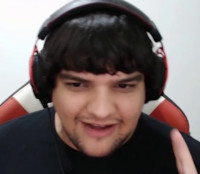

Top Stramers da twitch
Alanzoka
Alan Ferreira Pereira, mais conhecido como Alanzoka, é um streamer brasileiro. É considerado um dos maiores streamers da Twitch no país
Casemiro Amigo
Casimiro Miguel Vieira da Silva Ferreira, mais conhecido como Casimiro ou Cazé, é um jornalista, apresentador, comentarista esportivo, influenciador digital, humorista, youtuber e streamer brasileiro.
Pato Papão

Começou sua carreira como Youtuber player de League of Legends, abordando o assunto com GamePlays e música, posteriormente lançou-se oficialmente na twitch, local que agora é sua principal fonte de renda